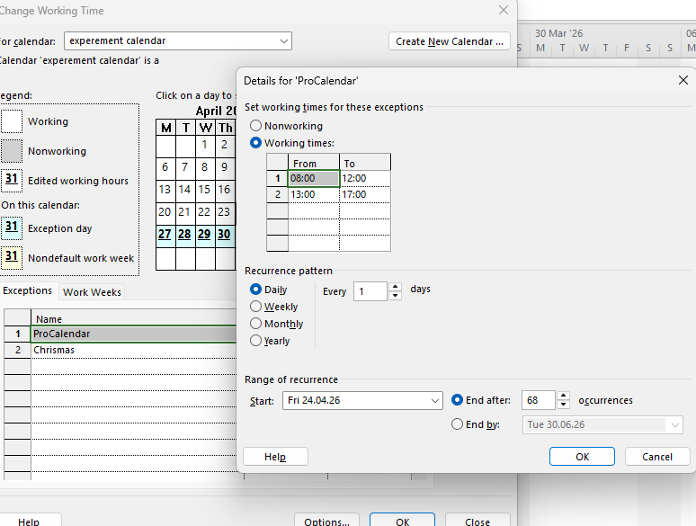
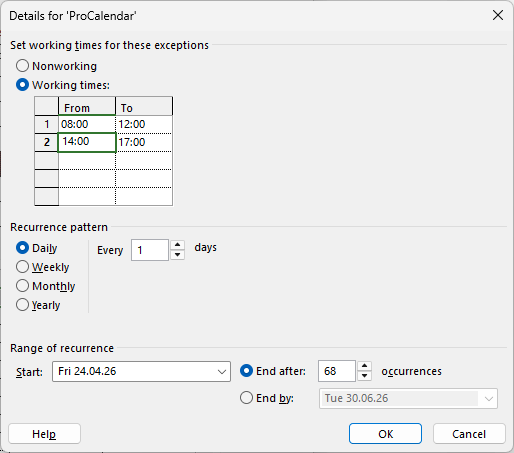
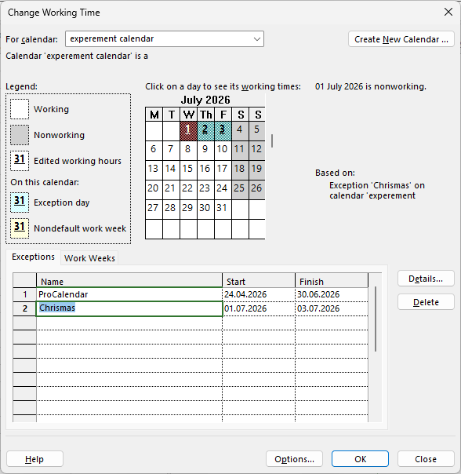
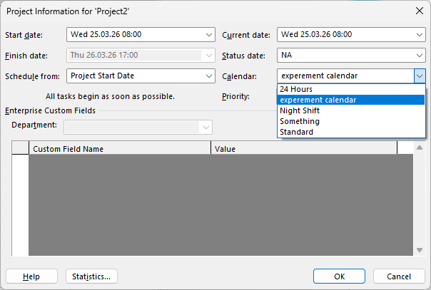

Objective
This guide explains how to create a new calendar, modify working time, and apply it in Microsoft Project.
Step 1: Create a New Calendar
- Go to Project tab
- Click Change Working Time
- Select Create New Calendar
- Give your calendar a name (e.g., My Calendar)
- Click OK

Step 2: Change Working Hours
- Select a day (e.g., Monday)
- Click Details…
- Set working hours (e.g., 09:00–12:00, 13:00–17:00)
- Click OK

Step 3: Add Special Days (Holidays)
- Go to Exceptions tab
- Add a holiday (e.g., Christmas)
- Select the date range
- Click OK

Step 4: Use the Calendar in a Project
- Go to Project Information
- Select your new calendar from the dropdown
- Click OK

How the Calendar Affects Scheduling
Once applied, the calendar controls task scheduling:
- Tasks will only be scheduled during working hours
- Non-working days (weekends, holidays) are skipped
- Task durations adjust automatically if working hours change